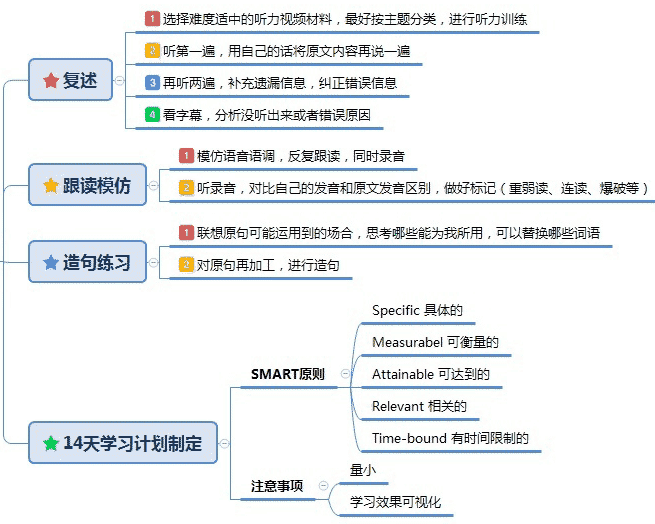

掌握英语能拓展国际视野，获取前沿知识，提升职场竞争力，是全球化时代的必备技能，也是跨文化交流的桥梁。
英语是打开全球资源的钥匙：75%学术文献以英语发表，90%跨国企业将其作为工作语言。掌握英语意味着直接获取知识、参与国际竞争、拓宽人生边界——这是数字时代的生存技能。
无论是学生考试、升学，还是以后做技术、搞研究、做外贸，都要面对纯英语资料。
英语是每个现代人进阶的必备技能！建议尽早掌握英语！
用你的注意力填满 1000 小时就能练成任何你所需要的技能……但，做不到每天至少 3 小时，还不如不做。
记忆是一切语言能力的基础。只能靠死记硬背！死记硬背还有另外一个说法，叫做博闻强识。大模型有足够预料才足够聪明，人脑也一样。
学习计划: For 大学毕业后
Be stubborn about your goals, and flexible about your methods.
1. 使用2004.01至今三大考区(亚太、欧洲与北美)官方真题库：慎小嶷的新浪博客【口语和写作】
2. 新概念3全文和翻译 | >新概念 频道 | 新概念更多资料下载 | 新概念 录音 | 根据中文翻译成英文，与原文对比，重点学习翻译不好的语句、单词短语。注意同意替换。
不要放弃纠音: 48个国际音标
To improve language activation, focus on writing and monologuing.
To improve accent, focus on shadowing and imitation.
量变才能导致质变：2min的短文跟读50遍，坚持1年。
像盖大楼一样每天按时按量施工，大楼就能盖好。路虽远行则将至，事虽难做则必成。
要每天动嘴（阅读/背诵/跟读/影读/对话/...），处处留痕。用手机录音，每周3次，每次至少10min，不够的周末补齐，按月统计工程量，动态计算何时能干活500小时。

S=Specific 具体的
M=Measurable可衡量的
A=Attainable 可达到的
R=Relevant 相关的
T=Time-bound 有时间限制的
1）Specific 具体的 ✖模糊的：本周掌握”烹饪类“相关口语表达 ✔具体的：Week1掌握《牛津有声图画词典》词汇P28（kitchen) 、BILIBILI《戈登终极烹饪教程》30句 2）Measurable ✖不可衡量的：要练好口语 ✔可衡量的：每天完成以下口语任务 词汇：《牛津有声图画词典》词汇P28（kitchen) 句型：《戈登终极烹饪教程》1-3句 3）Attainable ✖不可达到的：本周口语练到脱口而出 ✔可达到的：每天只记2页单词，每天只背3句，每周1个话题训练。 4）Relevant ✖不相关的：每天练习厨艺 ✔相关的：每天看一集美剧，培养语感 5）Time-bound ✖无时间限制：学习”烹饪类”相关口语表达 ✔有时间限制：14天掌握”烹饪类“相关口语表达 每天的学习任务不超过半小时，而且每2周完成一个主题的口语训练。看似走的很慢，但一年下来我可以积累24个主题的口语表达。 不仅如此，这24个主题的口语表达是我踏踏实实掌握、烂熟于心的。 只要涉及相关话题，我都可以侃侃而谈，从而达到了理想的口语状态：脱口而出。